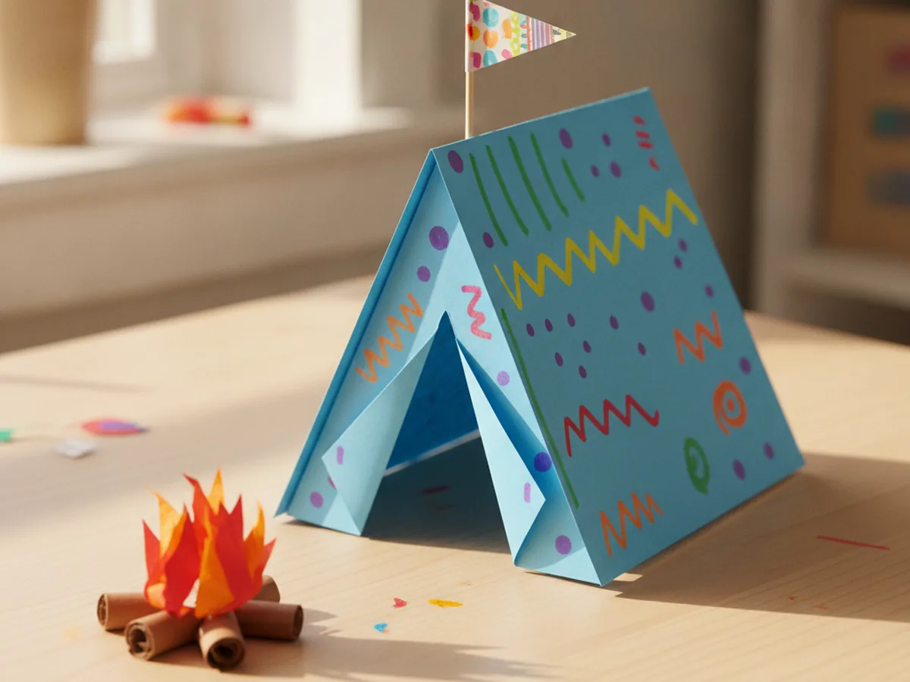
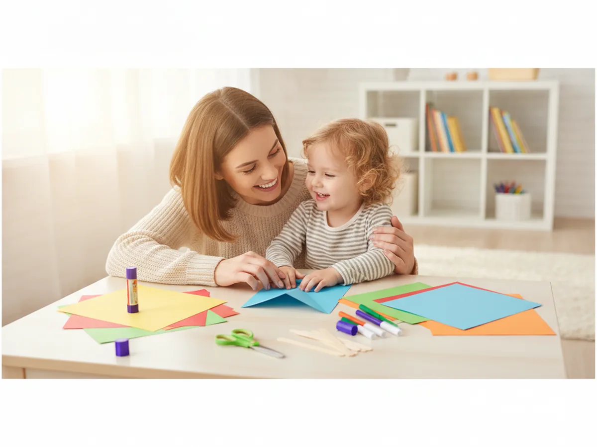
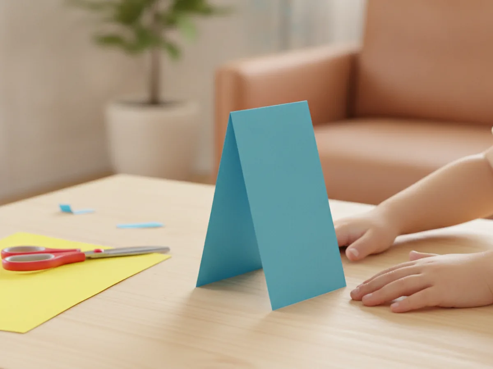
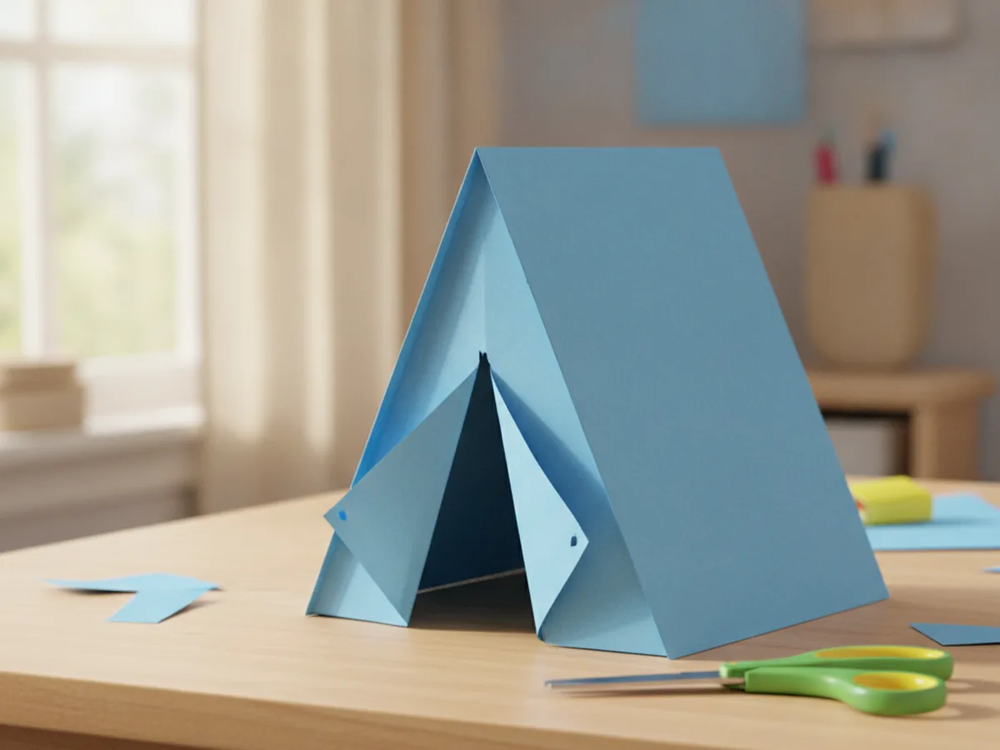
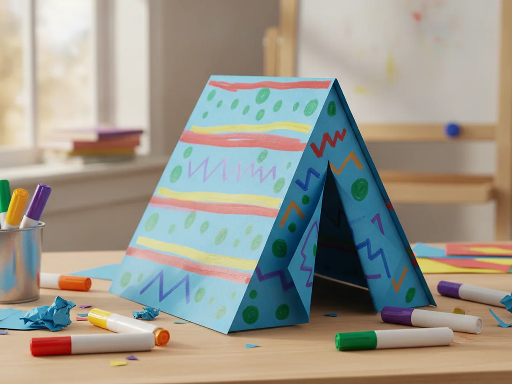
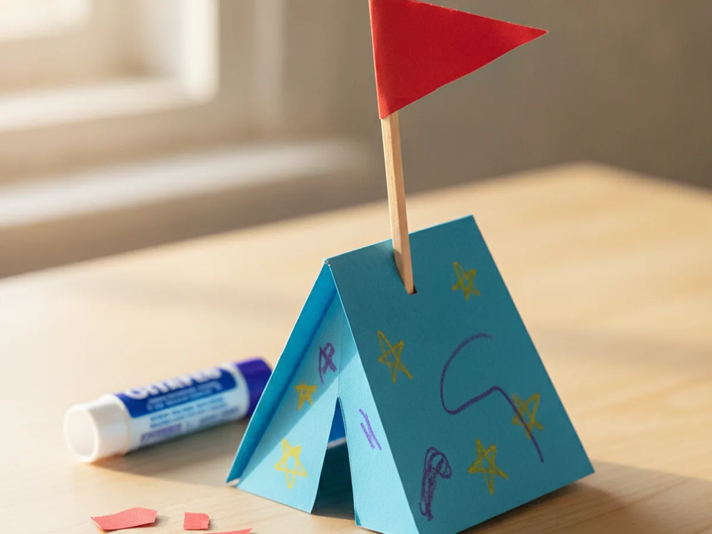
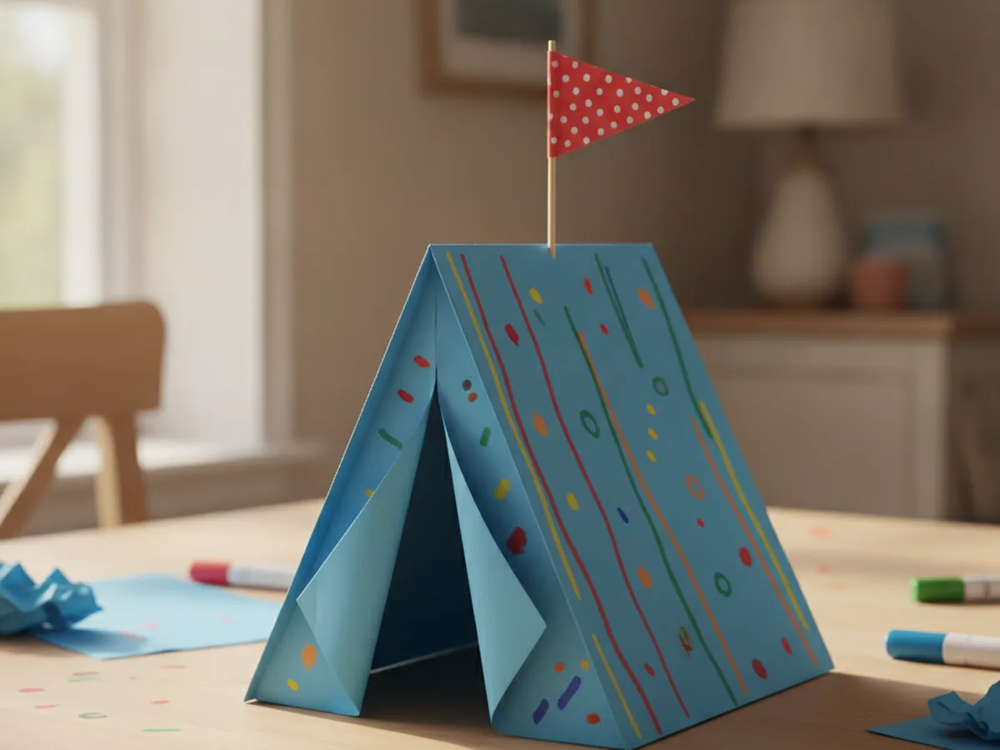
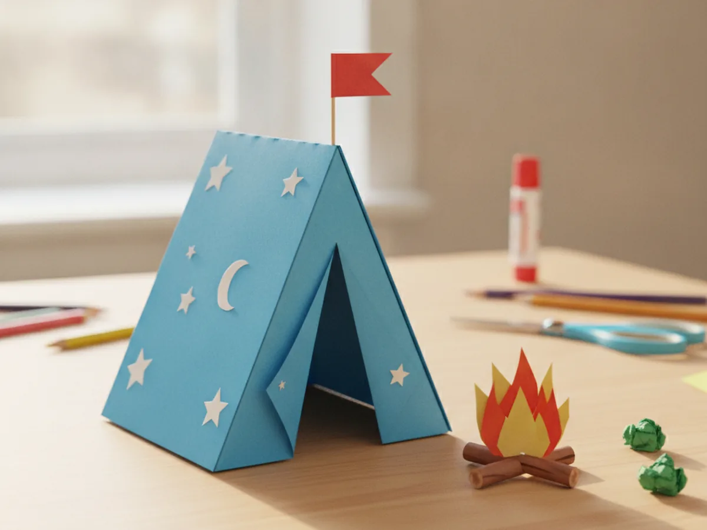

There is something so cozy about a little tent, even a tiny one made of paper. This paper tent craft turns one sheet of construction paper into an adorable stand-up camping tent your child can decorate, play with, and proudly show off. It folds in seconds, uses things you probably already have at home, and comes together in about 30 minutes. Grab some colorful paper and let's set up camp right on the kitchen table!
Why Kids Love This Craft
Kids adore anything they can actually play with after they make it, and this little tent is exactly that. Once it is folded and decorated, it becomes a tiny world for toy animals, mini figures, or a cozy hideout for a small stuffed friend. Making a paper tent craft gives your child that wonderful "I built something real" feeling.
There is real learning tucked inside the fun too. Folding the paper teaches little hands to line up edges and press a neat crease. Cutting the door builds scissor control and patience. And decorating the tent lets creativity run wild while practicing those important fine motor skills.
Best of all, this craft is wonderfully forgiving. There is no perfect tent and no wrong way to decorate one, so even your youngest crafter feels successful. It stays low-mess thanks to markers instead of paint, which makes it an easy yes on a busy afternoon. And because it uses just a sheet of paper and a few markers, it is a budget-friendly activity you can pull together any day of the week without a special trip to the store. 😊

What You'll Need
Here is everything you need to make this easy paper tent craft, and most of it is probably already in your craft drawer.
- Construction paper, one sheet makes one tent, so grab a few fun colors.
- Washable markers, for decorating the tent with stripes and patterns.
- Washable glue sticks, for the flag and the little paper campfire.
- Child-safe scissors, for cutting the tent door and flag.
- Wooden craft sticks, one short stick makes the perfect little flagpole.
- A pencil, for marking the door before you cut.
- Clear tape, optional, to help the tent stand extra sturdy.
Step-by-Step Instructions
Ready to pitch your tent? Follow these simple steps and you will have a sweet little campsite in no time. Each one is easy enough for small hands, with a few helper tips along the way.
Step 1: Fold the Tent Base
Start with one sheet of construction paper laid the long way in front of you. Help your child fold it in half so the two long edges meet, then press a firm crease down the middle. Open it back up just a little so it stands like an upside down V, and there is your tent shape! This single fold is the whole base of your paper tent craft, so take a moment to line up the edges nicely before pressing.

Step 2: Cut and Open the Tent Door
Stand the folded paper up and look at the front. Using a pencil, draw an upside down V, like a tall narrow triangle, in the center of one side for the door. Carefully cut along your two pencil lines, leaving the bottom uncut so the flaps stay attached. Then fold the two triangle flaps back to make an open doorway. Now your tent has a real entrance to peek inside!

Step 3: Decorate the Tent
This is the part kids look forward to most. Hand over the washable markers and let your child decorate the tent however they like. Stripes, polka dots, zigzags, tiny stars, anything goes. Coloring both sides makes the tent look great from every angle, whether it is on the shelf or in the middle of a pretend campsite. If your child wants to add a name, a tiny door sign, or a little window, this is the perfect moment to make the tent feel truly their own.

Step 4: Make a Flag for the Top
Every great tent needs a flag! Cut a small triangle from a bright paper scrap and glue it onto the end of a wooden craft stick. Once the glue is set, tuck the stick into the top crease of the tent or tape it to the back peak so the flag waves proudly above your paper tent craft. This tiny detail makes the whole thing feel finished and special.

Step 5: Stand Your Tent Up
Now gently open the tent to the angle you like and set it down on the table. If it feels a little wobbly, press the center crease again or add a small loop of tape under each bottom edge to hold it steady. Step back and admire it together, because your child just made a tent that really stands up all on its own.

Step 6: Add a Cozy Paper Campfire
To turn your tent into a whole campsite, make a tiny paper campfire to sit beside it. Cut a few thin brown strips for logs and some orange, red, and yellow flame shapes, then glue them together into a little pile. Set it right next to the tent and your camping scene is complete. Your paper tent craft just became a cozy backyard adventure. 🔥

Variations to Try
Sturdy Cardstock Version: Swap the construction paper for thick cardstock or a folded index card so the tent stands taller and holds up to daily play. This version is perfect if your child wants their tent to become a permanent home for small toys.
Toy Animal Campground: Make several mini tents in different colors and line them up into a whole campground for toy animals or little figures. Kids love giving each camper their own tent, and it stretches one quick craft into an afternoon of imaginative play.
Glowing Window Tent: Cut a small window in the side of the tent and glue a square of tissue paper behind it. Set the tent near a lamp and watch a soft, warm glow shine through, just like a real tent lit up at night.
Final Thoughts
This paper tent craft is one of those simple projects that gives back so much more than the few supplies it takes. It is quick, low-mess, and endlessly playful, and it grows right into pretend camping adventures long after the crafting is done. Whether you make one tent or a whole campground, the real magic is the time spent folding, snipping, and giggling together.
I would love to see the little campsite your family builds. Snap a photo, pin it for other craft-loving mamas, and most of all, enjoy this cozy moment with your camper. Happy crafting, friend! ⛺
More Crafts You'll Love
If your little camper loved pitching this tent, these easy paper projects are the perfect next adventure: